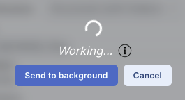

) in the image toolbar is within the tools
drop-down (
) in the image toolbar is within the tools
drop-down ( ), and that will
allow you to save that currently selected image as a FITS file (or other formats, including
saving just the overlays). Note that you control where the
file is saved on your disk through your browser; your browser may be
configured to store all downloads in a particular location on your
disk.
), and that will
allow you to save that currently selected image as a FITS file (or other formats, including
saving just the overlays). Note that you control where the
file is saved on your disk through your browser; your browser may be
configured to store all downloads in a particular location on your
disk.
).
The plot will be saved to your disk as a png file.
⚠ Tips and Troubleshooting
A pop-up window can be called up at any time by clicking the
"Background Monitor" tab. You can watch your data being retrieved. It
will update that window when the data are available for download
and/or overlay on your image, providing a link (or links) for
obtaining the data. Remove them from the list by clicking on the
'x'.
If you have made, say, a large catalog request and don't want the
pending catalog request to occupy screen space while it loads, you can
click on the button marked "send to background" to reclaim your screen
space, seen here:

When the background monitor finishes, however, you will have to
actively tell it to display results; it doesn't do it automatically if
you have sent it to the background.
You can ask it to send you email when it is ready by clicking on the
"enable email notification" and giving it an email address.
To stop any query mid-way through, click on the little red octagon
("stop sign") that appears next to the query in the Background Monitor
pop-up.
If you forgot to put in your email at the beginning, or if the packaging is taking longer than you expected, you can click on "Enable email notification" from the bottom of the Background Monitor popup and add your email during the packaging process.
If you are having technical difficulties, click on the circle with an
"i" in it to get additional information, like this:

In this case, the job is executing, at the time as given, with a job
id as shown.